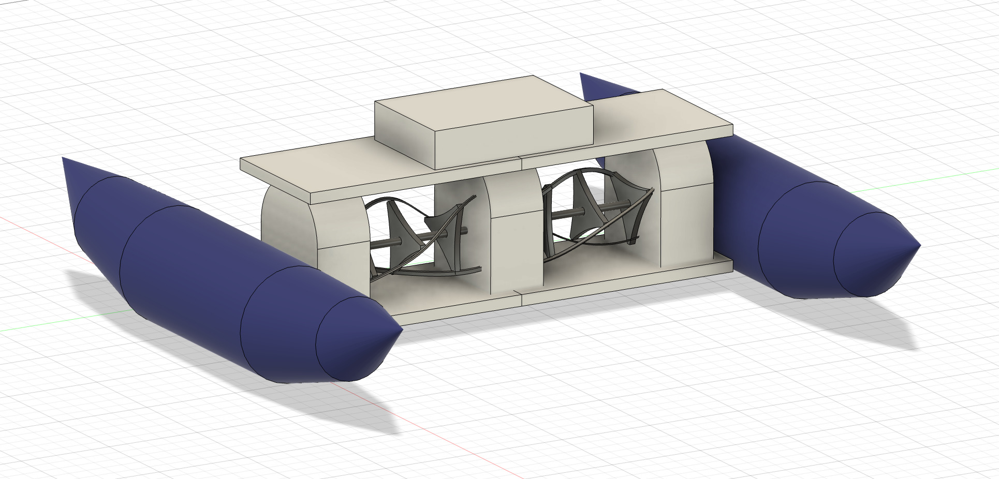
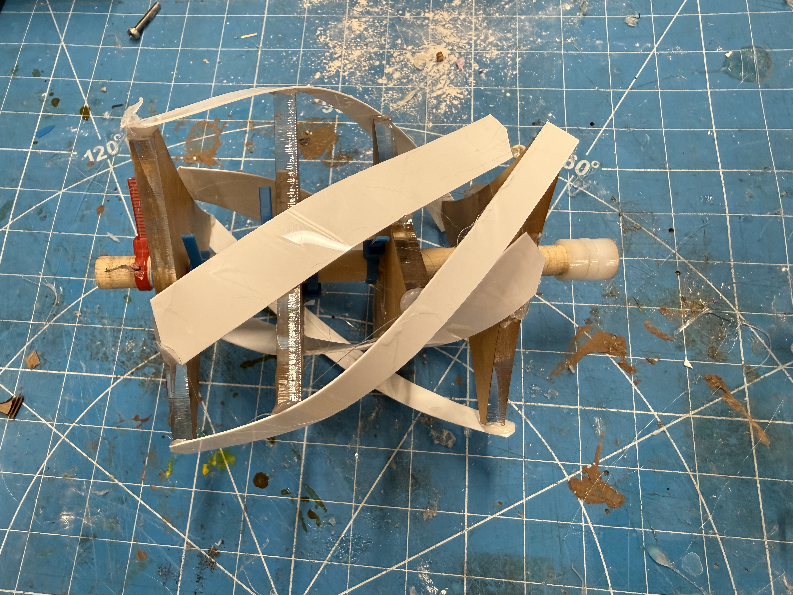
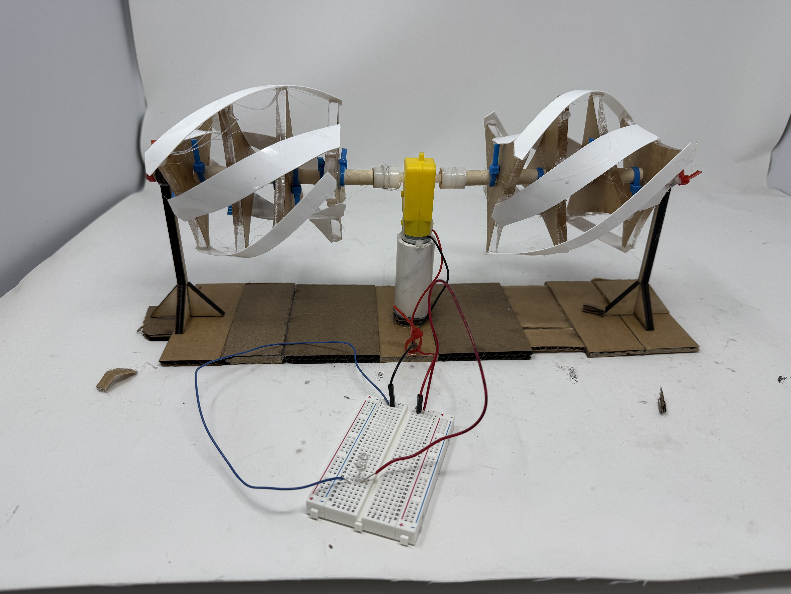
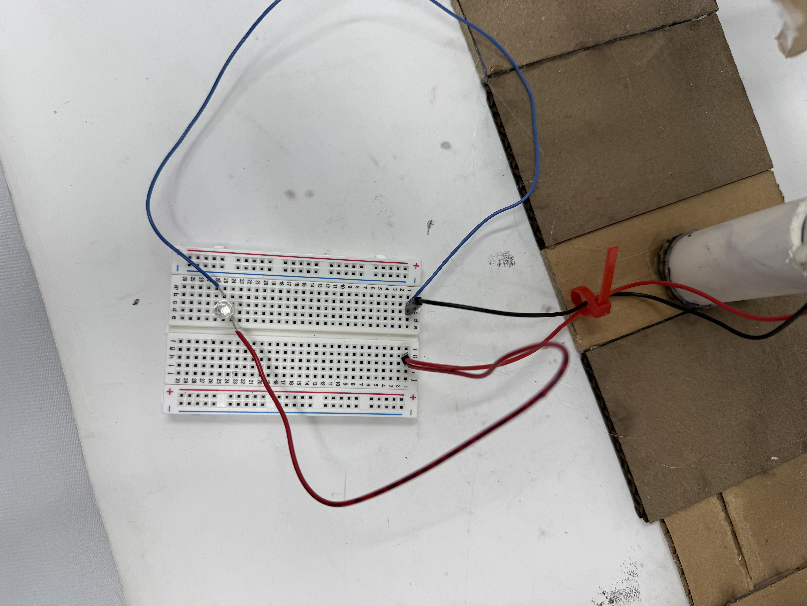
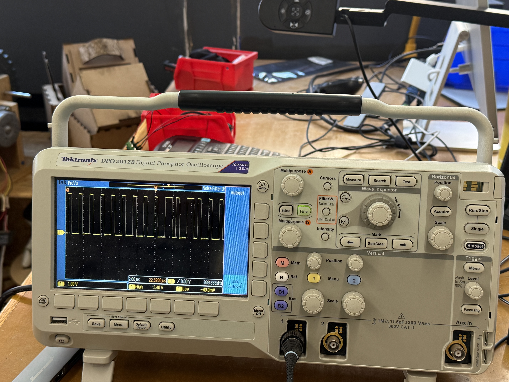

<div class="textcontainer">
<p class="margin"> </p>
<h3>Week 7: Electronic Outputs</h3>
<h4>Assignment: Minimum Viable Product for Final Project</h4>
<p class="margin">
For my MVP, I decided to attempt building a mock-up model of the water turbine, focusing specifically on energy generation. First, I created a CAD design for what I was planning to do for the project (the design ended up getting changed later on). After that, I created a cardboard model (see Kinetic Sculpture).
</p>
<p></p>
<p class="margin">
When testing the movement of the blades under moving water, I also realized that I would need to add more surface area to the strips around the blades to increase movement (after reworking this and testing the new blades under moving water, I noticed a slight increase in ease of spinning). However, there was some resistance of the blades to spinning, and it is worth considering finding a motor with less resistance, and/or using lighter material for the turbine blades. As the Charles River (where I am planning on testing my final product) has a very slow current, it is very important that the overall mechanisms of the turbine have the least resitance as possible, to provide greater ease for electricity generation.
</p>
<video controls style="width: 200%; flex-shrink: 0; max-width: 400px;">
<source src="../Model1Video.mp4" type="video/mp4">
Your browser does not support the video tag. <a href="../Model1Video.mp4">Download the video</a> instead.
</video>
<p></p>
<p class="margin">
For the generator, I was origionally planning to use a stepper motor as I had seen it being used in past students' project for electricity generation. However, after doing research and talking with Nathan, I decided to use DC Motors instead as they are generally better for continuos power generation. For the first run through of the MVP, I focused on generating electricity, starting with the simple setup of the blades turning the motor to light up an LED.
</p>
<p></p>
<p></p>
<video controls style="width: 200%; flex-shrink: 0; max-width: 400px;">
<source src="../MVPMovie1.mp4" type="video/mp4">
Your browser does not support the video tag. <a href="../MVPMovie1.mp4">Download the video</a> instead.
</video>
<p class="margin">
I was unable to get an exact reading from the oscilloscope to determine the time domain at which it was operating, as it is a device that generates energy, instead of having energy inputted into it. When I got a reading of the device when inputing energy, I got the chart below.
</p>
<p></p>
</div>